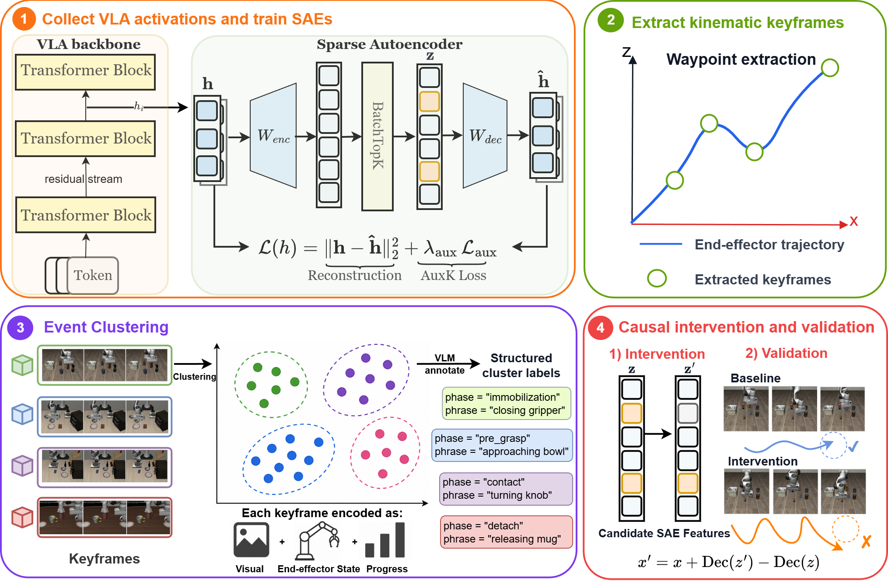

论文笔记：Event-Grounded Sparse Autoencoders for Vision-Language-Action Policies
论文笔记：Event-Grounded Sparse Autoencoders for Vision-Language-Action Policies
1. 背景信息与核心判断
- 作者 / 团队：Xinchen Jin、Aditya Chatterjee、Pranav Kumar、Rohan Paleja；Purdue University 计算机系。
- 版本：arXiv:2605.17204v1，2026-05-17。本文按该预印本记录，不推断会议录用情况。
- 原文与代码：官方全文、Event-SAE。材料覆盖正文及附录 A–L；未运行代码或复现实验。
值得记住的四点：
- VLA 的 SAE 特征难以从词表解释，作者转而用机器人真实运动中的事件，自动筛选值得昂贵闭环测试的特征。
- 在 OpenVLA 上，关注事件附近的激活变化形状，比关注平均激活值更能找到破坏任务的特征。
- 同样的编辑在不同架构和位置上可能几乎无效，也可能让策略崩溃；离线重构精度无法替代闭环保真检查。
- 行为被改变，不等于某个语义因素被独立控制。 本文最扎实的贡献是候选筛选和干预诊断，尚未建立“一个特征对应一个操作概念”的机制解释。
2. 关键问题：如何从机器人行为找到值得干预的内部特征？
Golden Case：把奶油奶酪放进篮子。 原文 Figure 10(a) 中，OpenVLA 正常完成任务；在 layer 31 将事件排序选出的 SAE 特征 f19249 置零后，目标定位、抓取和放置均受损。这个例子证明该坐标参与了行为，但仅看最终失败，无法判断它究竟编码“奶酪”“抓取”，还是更通用的运动控制信息。
LLM 可以通过高激活文本或词表投影猜特征含义，VLA 却输出连续动作或离散动作 token：给方向贴上一个词，并不能保证它在机器人执行中控制那个概念。更麻烦的是，动作后果要经过闭环 rollout 才显现，每试一个特征都有仿真或实机成本。
本文把问题拆成两步：先从不依赖 SAE 的行为信号提出事件，再用 SAE 对这些事件的响应挑选干预对象。 相比先筛高激活特征、再人工对齐视频命名，这个流程可以给所有 alive 特征打分；VLM 只协助解释事件，不决定特征排序（§1、§3、§5）。

来源：原文 Figure 10(a)。比较成功基线与 f19249 置零后的连续帧：退化贯穿定位、抓取和放置。这个局部图支持行为受损，但不足以把该特征命名为一个独立的“奶酪”或“抓取”概念。
3. 关键方法：外部事件筛选，保留原状态做局部编辑

Figure 1 应看两条信息流如何汇合：一条把隐藏状态变成 SAE 稀疏激活；另一条从机器人轨迹提取事件。两者到特征评分时才汇合，随后用闭环干预检验。这里“外部”是指事件不从 SAE 激活中定义，并非事件与策略行为在统计上独立。
沿奶酪案例走一遍
下列流程用同一任务解释方法；接近、抓取、放置等阶段是机制示意，不声称原文为 f19249 确认了某个唯一事件标签。
① 收集激活、训练 SAE。 冻结分析对象策略，用其闭环轨迹中的逐 token、post-block residual 激活训练 BatchTopK SAE。编码器将稠密状态映射到稀疏代码，解码器重构输入；只训练 SAE，损失为重构 MSE 加复活死特征的 AuxK 项。不能先把所有 token 平均再训练，否则容易抹掉动作结构。
② 从轨迹找关键时刻。 AWE 在末端执行器的位置轨迹上选最少的 waypoint，使相邻 waypoint 线性插值的逐时刻误差不超过预算 $\eta=0.05$。抓取附近的转折、运输和放置附近的运动变化因此成为候选；这不是接触传感器给出的真值，运动平滑但语义重要的事件也可能漏掉。
③ 将重复出现的时刻聚成事件。 每个关键帧配周围五帧图像、视频片段与元数据。描述向量拼接视觉表示、末端位姿/夹爪状态、时间进度，权重分别为 1.0、0.5、0.4，再按余弦距离阈值 0.18 做任务内凝聚聚类。只保留覆盖至少一半 episode 的簇。视觉和夹爪状态帮助区分空间相近的抓取与释放，时间信息用于区分前后阶段（§3.2–3.3、Table 5）。
OpenVLA 的事件簇另外由 Gemini-3.1-Pro-preview 生成一个动态事件短语和阶段标签。Prompt 要求从同一簇的多个短片中找共同事件，输出 phrase、phase 两个 JSON 字段。这些词不进入排序与干预评分，因此不是 VLM 语义监督训练 SAE（Appendix C、§5）。
④ 找事件附近“变了”的特征。 以关键时刻为中心取 $\pm5$ 步窗口；对每个特征的激活减去窗口均值，匹配脉冲、阶跃上升、阶跃下降三个模板。一个一直高激活的特征未必得高分；一个在接触前后突然变化的特征才可能入选。对奶酪任务，这给出了包括 f19249 这类候选的自动发现路径，但尚未证明其语义。
精确地，令 $z^{(i)}_{f,\delta}$ 为事件 $i$ 周围偏移 $\delta$ 的特征激活，$q$ 为经过中心化、单位范数归一化的模板：
Appendix D Eq. 4–5 的聚合顺序是：同一簇、同一 episode 内先平均各事件的模板分数，再取最佳模板；随后平均 episode，最后均匀平均保留的簇。这与正文“每个事件先选最佳模板”的简述并不完全相同，复现应优先核对公式及实现。
去均值消除了常量背景，并未消除激活变化幅度：模板做了单位范数归一化，激活窗口没有。分数更像沿模板方向的投影，而不是纯粹的形状相关系数。
⑤ 单独编辑，再让机器人继续执行。 设 $z=\mathrm{Enc}(x)$，只将选中坐标乘以 $\alpha$，得到 $z'$；注入的状态是：
线性解码器下，单特征编辑等价于 $x'=x+(\alpha-1)z_f d_f$。$\alpha=0$ 置零，$0<\alpha<1$ 软抑制，$\alpha=1$ 精确恢复原状态；当前特征没激活时也不会平白加上方向。这样可以避免将 SAE 自己的重构损失混入编辑效应。保留重构误差不保证编辑还在数据分布内，大幅抑制仍可能破坏控制。
回到案例：置零 f19249 后，机器人闭环执行失败，建立了“编辑这个坐标会改变结果”的证据；无法直接从该失败跳到“f19249 就是抓取奶酪的概念”。与固定加 $\beta d_f$ 相比，这里的改变量依赖当前激活值，不会在所有输入上注入同一大小的扰动（§3.5、Appendix K）。
4. 数据与复现要点
仿真覆盖 LIBERO-Spatial、Object、Goal、10 四个 suite；OpenVLA 输出离散动作 token，$\pi_{0.5}$ 由 PaliGemma（PG）提供视觉语言条件、action expert（AE）生成连续动作块。激活采集每任务 50 次 rollout；重构保真测试每任务 10 次。主干预遵循 §4.1 的 rollout 预算，OpenVLA 取 top-5、$\pi_{0.5}$ 取 top-3，分别单独编辑每个特征再平均，绝非同时删除 top-K（§4.3）。
| 复现设置 | OpenVLA | $\pi_{0.5}$ PG / AE |
|---|---|---|
| SAE 输入维度 → 字典大小 | 4096 → 32768 | 2048 → 2048 / 1024 → 1024 |
| 稀疏预算 | 平均每样本 64 个激活 | 同左 |
| 训练 | Adam，学习率 $5\times10^{-5}$，4k steps | Adam，$10^{-4}$，10k steps |
| 共用设置 | batch 40,000；warmup 1,000；激活归一化；float32 | 同左 |
| 主要干预位置 | layer 31 的 post-block residual | PG：0/5/11/16；AE：0/5/11/17 |
BatchTopK 在整个 batch 保留 $kB$ 个激活，不保证每个样本恰好 64 个。AE 激活另按策略查询时刻、去噪步和动作 offset 记录，offset $j$ 对齐环境步 $t+j$（Appendix A）。
实机是单臂 Mobile ALOHA，上面运行 LoRA 微调后的 $\pi_{0.5}$，按指令接近红色或黄色薯片，交换两种颜色的左右布局以减弱固定轨迹混淆。它是行为偏移演示，规模与任务范围都不能替代完整操作能力评估（§4.4、Appendix E）。
5. 关键结果：事件排序能筛出重要坐标，语义特异性仍未成立
5.1 首先确认“尺子”会不会把策略弄坏
Table 1 中 OpenVLA layer 16 的 FVE 达 0.999，但用 SAE 重构替换状态后，闭环成功率为 0.0%；layer 31 的 FVE 为 0.995，Hooked SR 也只有 34.8%，对应无 hook 基线 68.0%。相反，$\pi_{0.5}$ 所测 PG/AE 层的 Hooked SR 均不低于 95.8%。
这支持使用闭环保真而非仅看 FVE。作者将差异解释为 OpenVLA 动作量化误差在闭环中累积、连续动作块更稳健；这是合理解释，尚非控制其他架构差异后的因果证明。Table 1 的误差条是四个 suite 间标准差，不是多 seed 置信区间。后续残差保留编辑应与原始策略比较，不能把 34.8% 当主干预基线。
5.2 OpenVLA：时序排序有明确增量
Table 3，layer 31，四 suite 平均成功率：
| 排序 / 条件 | SR | 相对主实验基线变化 |
|---|---|---|
| 无干预 | 70.0% | — |
| Event-aligned | 48.8% | −21.2 pp |
| Window-mean | 63.8% | −6.2 pp |
| Task-mean | 63.5% | −6.5 pp |
| Random-alive | 68.7% | −1.3 pp |
Table 4 补充：事件排序与两种均值排序的 top-K 重合率各 5.0%，两种均值排序之间却有 95.0%。所以事件方法确实挑出了不同、且更有破坏力的坐标，效应主要集中在前三个特征（Appendix I）。注意这些是诊断性性能下降，不是策略性能提升。
但还不能把全部增量归因于“时序形状”：Appendix D 的事件排序均匀平均簇，window-mean 按簇事件数加权；随机对照还主动排除了三种排序的入选特征。应增加相同聚合权重、相同激活/扰动范数分布的对照，才能更干净地归因。主表也没有给这些差值的置信区间。
5.3 跨架构的两端：不敏感与饱和都不利于解释
PG 单特征置零只有小幅影响；AE 的三种有信息排序则几乎都让策略崩溃，难以比较排名质量。例如 AE layer 0 的基线 96.4%，事件/窗口/任务排序都降至 0.0%，但随机对照仍有 95.7%（Table 3）。
这里应以表格约束正文措辞。 §4.3 / §5 将随机 AE 特征也概括为能导致类似崩溃，但 Table 3 的四层随机 SR 实际为 95.7%、73.0%、88.3%、89.3%，明显高于前三种排序的大多数结果。能说部分随机坐标也有破坏力，不能说随机单特征普遍造成同等崩溃。
PG 的弱单特征效应同样不能证明它不重要：Appendix H Table 6 中，layer 0 随机同时删除 16 个 active 特征，将 LIBERO-Goal 从 97.8% 降到 8.0%；后层通常温和得多。作者从视频观察到机器人有时动作连贯却执行了另一条任务，据此推测早层参与指令落地。它也修正了正文“16-feature dropout 仍只有温和影响”的笼统概括。
Figure 4 的 AE 软抑制曲线在很窄的强度区间内从崩溃恢复到基线，二值 SR 更像阈值开关。实机 Figure 5 因此采用更温和的抑制，并用末端到指令目标的距离：layer 17 的偏离最明显，早层更嘈杂。这支持改变 prompt-following，不足以证明可稳定地把“靠近红色”转换成“靠近黄色”；不从图中估读未经表格报告的精确距离。
5.4 最大的证据边界：任务失败无法隔离一个因素
Appendix J 对每个任务至多取三个事件簇，各挑最高分特征，再分别干预源任务和同 suite 的一个随机其他任务，每个条件 5 次 rollout。118 个簇合并后，target SR 0.641、off-target SR 0.631（Table 8），看不出明确的任务选择性。
作者将其解释为共享 reach/grasp/transport/release 计算。这个解释与结果相容，但表格报告的是干预后 SR，未同时列出每组匹配的无干预 SR；因此不能严谨地把两个接近的数直接当作“因果下降幅度相等”。不同任务还可能共享同一操作事件，跨任务破坏本身也不排除事件级语义。结论应停在：当前测试没有建立 task-private circuit，也没有证明单一因素被隔离。
6. Insights
1. 下一步应优化“选择性”，而不只追求更大 SR drop。 本文最强信号来自少数 OpenVLA 特征，但多个操作环节同时坏掉。我的判断是：复用事件排序做候选发现是合理的；验证时应只在指定阶段编辑，分别测抓取时刻、夹爪开合、末端路径和目标选择，并配 target/off-target 的无干预基线。如果只在接触期编辑就选择性改变夹爪而不改变定位，才比整段 rollout 失败更接近机制解释。
2. 应将“事件相关性”与“实际扰动剂量”分开。 分数保留变化幅度，编辑大小又正比于 $z_f d_f$；高分特征也可能只是产生更大的残差扰动。Appendix K 的固定向量对照已经显示，注入量达到原状态范数的 1.54 倍时，即使 decoder 方向比随机方向更有破坏力，也难称局部语义控制。下一轮应在匹配 $\|(\alpha-1)z_fd_f\|/\|x\|$ 后比较排序，并报告连续动作偏移；残差保留公式本身不会自动完成剂量校准。
3. 保真、可干预、可解释是三个不同的选择标准。 Appendix L 中 MLP 输出 hook 的重构成功率优于 residual hook（0.83 vs 0.67），但单特征编辑较弱；作者为获得可测干预信号而选择后者。这提醒我：选“最容易打坏”的位置会偏向下游控制接口。PG 早层多特征删除能改变指令执行，而 AE 单特征删除常只是让动作崩掉；研究语义落地时，前者可能更值得深挖。应按目标选择 hook，而不是用单一重构或破坏指标给 SAE 排名。
7. 连接与发现
- MOC-Interpretability — Topic/Area：将 SAE 从文本命名推进到闭环行为验证，同时展示“因果影响”与“语义隔离”之间的缺口。
- MOC-VLA — Topic：用机器人事件锚定 SAE 特征，机制可解释性线中因果验证强度最高（闭环 rollout）的一篇。